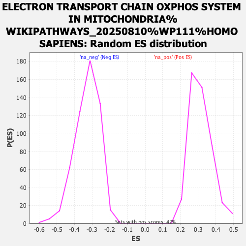

Profile of the Running ES Score & Positions of GeneSet Members on the Rank Ordered List
| Dataset | ranked_gene_list |
| Phenotype | NoPhenotypeAvailable |
| Upregulated in class | na_pos |
| GeneSet | ELECTRON TRANSPORT CHAIN OXPHOS SYSTEM IN MITOCHONDRIA%WIKIPATHWAYS_20250810%WP111%HOMO SAPIENS |
| Enrichment Score (ES) | 0.6104222 |
| Normalized Enrichment Score (NES) | 1.9343108 |
| Nominal p-value | 0.0 |
| FDR q-value | 0.032856263 |
| FWER p-Value | 0.171 |
| SYMBOL | RANK IN GENE LIST | RANK METRIC SCORE | RUNNING ES | CORE ENRICHMENT | |
|---|---|---|---|---|---|
| 1 | ATP5F1D | 14 | 23.040 | 0.0823 | Yes |
| 2 | NDUFS8 | 85 | 17.372 | 0.1407 | Yes |
| 3 | UQCRC1 | 172 | 14.744 | 0.1887 | Yes |
| 4 | UCP2 | 348 | 12.339 | 0.2225 | Yes |
| 5 | ATP5MC2 | 418 | 11.592 | 0.2601 | Yes |
| 6 | ATP5ME | 449 | 11.365 | 0.2993 | Yes |
| 7 | NDUFB10 | 748 | 9.481 | 0.3153 | Yes |
| 8 | NDUFA3 | 955 | 8.510 | 0.3334 | Yes |
| 9 | NDUFB1 | 1063 | 8.069 | 0.3560 | Yes |
| 10 | NDUFS3 | 1070 | 8.025 | 0.3846 | Yes |
| 11 | COX6B1 | 1251 | 7.410 | 0.4003 | Yes |
| 12 | NDUFA5 | 1418 | 6.923 | 0.4151 | Yes |
| 13 | SCO1 | 1439 | 6.843 | 0.4386 | Yes |
| 14 | UQCR10 | 1480 | 6.704 | 0.4604 | Yes |
| 15 | UCP3 | 1617 | 6.276 | 0.4747 | Yes |
| 16 | COX7A1 | 1921 | 5.498 | 0.4760 | Yes |
| 17 | NDUFS6 | 1977 | 5.371 | 0.4920 | Yes |
| 18 | SLC25A14 | 2048 | 5.184 | 0.5064 | Yes |
| 19 | NDUFAB1 | 2128 | 4.993 | 0.5196 | Yes |
| 20 | COX4I1 | 2320 | 4.599 | 0.5245 | Yes |
| 21 | SURF1 | 2335 | 4.568 | 0.5402 | Yes |
| 22 | NDUFA10 | 2454 | 4.380 | 0.5488 | Yes |
| 23 | UQCRQ | 2494 | 4.294 | 0.5619 | Yes |
| 24 | NDUFA2 | 2529 | 4.246 | 0.5751 | Yes |
| 25 | COX7C | 2789 | 3.797 | 0.5730 | Yes |
| 26 | NDUFS5 | 2797 | 3.781 | 0.5862 | Yes |
| 27 | COX5A | 2910 | 3.617 | 0.5924 | Yes |
| 28 | NDUFB3 | 3433 | 2.939 | 0.5711 | Yes |
| 29 | ATP5F1E | 3519 | 2.837 | 0.5761 | Yes |
| 30 | NDUFB7 | 3652 | 2.664 | 0.5777 | Yes |
| 31 | UQCRH | 3724 | 2.584 | 0.5827 | Yes |
| 32 | NDUFA6 | 3776 | 2.529 | 0.5887 | Yes |
| 33 | COX17 | 3824 | 2.482 | 0.5948 | Yes |
| 34 | COX7A2 | 3969 | 2.339 | 0.5944 | Yes |
| 35 | NDUFC1 | 3986 | 2.318 | 0.6018 | Yes |
| 36 | COX11 | 4111 | 2.197 | 0.6021 | Yes |
| 37 | ATP5IF1 | 4162 | 2.134 | 0.6068 | Yes |
| 38 | NDUFB2 | 4226 | 2.078 | 0.6104 | Yes |
| 39 | UQCRB | 4885 | 1.549 | 0.5758 | No |
| 40 | COX7B | 4906 | 1.524 | 0.5801 | No |
| 41 | SDHC | 4932 | 1.506 | 0.5840 | No |
| 42 | SLC25A5 | 4978 | 1.465 | 0.5865 | No |
| 43 | NDUFA4 | 5172 | 1.335 | 0.5795 | No |
| 44 | ATP5MC3 | 5646 | 1.029 | 0.5543 | No |
| 45 | DMAC2L | 5705 | 0.997 | 0.5544 | No |
| 46 | UQCRFS1 | 6271 | 0.704 | 0.5223 | No |
| 47 | NDUFB9 | 6351 | 0.671 | 0.5199 | No |
| 48 | COX7A2L | 6714 | 0.496 | 0.4996 | No |
| 49 | SDHB | 7336 | 0.258 | 0.4626 | No |
| 50 | SLC25A4 | 7633 | 0.168 | 0.4451 | No |
| 51 | NDUFB6 | 7643 | 0.164 | 0.4451 | No |
| 52 | NDUFB4 | 7655 | 0.162 | 0.4450 | No |
| 53 | ATP5PB | 8620 | -0.061 | 0.3863 | No |
| 54 | NDUFV3 | 10143 | -0.526 | 0.2951 | No |
| 55 | UQCRC2 | 11057 | -0.944 | 0.2427 | No |
| 56 | NDUFS4 | 13020 | -2.442 | 0.1315 | No |
| 57 | NDUFS1 | 14224 | -4.253 | 0.0733 | No |
| 58 | NDUFA12 | 14599 | -5.236 | 0.0694 | No |
| 59 | SLC25A27 | 15832 | -11.484 | 0.0355 | No |
